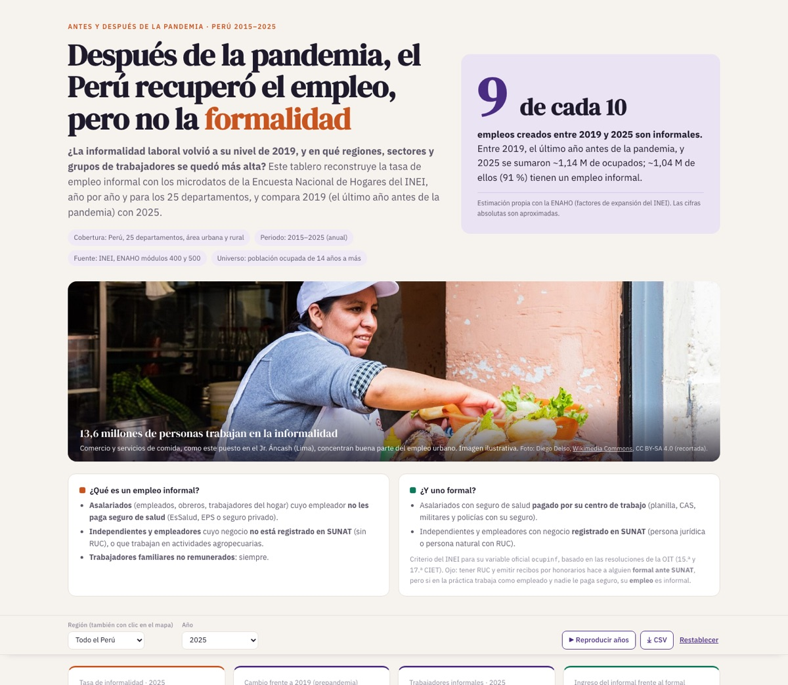

El Perú recuperó el empleo, pero no la formalidadPeru got its jobs back, but not formality
Pregunta: ¿la informalidad laboral volvió a su nivel de antes de la pandemia, y dónde se quedó más alta?
Question: did labour informality return to its pre-pandemic level, and where did it stay higher?
9 de cada 109 in 10
empleos creados entre 2019 y 2025 son informales; la tasa llegó a 73,7 % en 2025.
jobs created between 2019 and 2025 are informal; the rate reached 73.7% in 2025.
Foto:Photo: Diego Delso, CC BY-SA 4.0